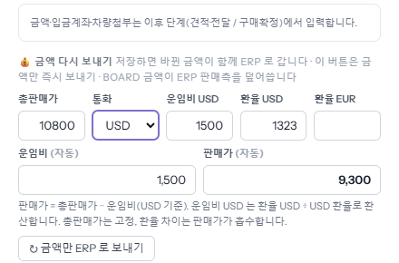
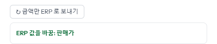
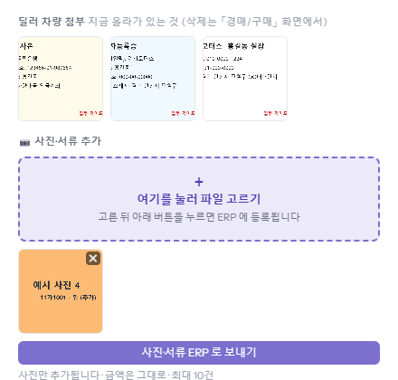
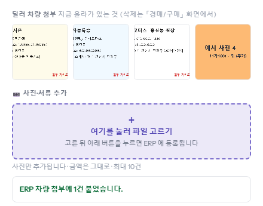

구매확정 뒤에 판매 금액이 바뀌었거나 딜러가 사진을 늦게 보낸 경우입니다. 매입예정 목록에서 그 차를 눌러 오른쪽 창에서 고치면 ERP 에도 반영됩니다. 차 상태가 「ERP 전환완료」여도 됩니다.
「총판매가」·「통화」·「운임비 USD」·「환율 USD」·「환율 EUR」은 구매확정 창과 같은 칸입니다. 적으면 「운임비 (자동)」과 「판매가 (자동)」이 다시 계산됩니다. 예시는 총판매가를 10,500 에서 10,800 달러로 바꿔 판매가가 9,300 이 됐습니다.

바로 ERP 로 보내고, 아래에 ERP 에서 바뀐 칸이 보입니다(예: 「ERP 값을 바꿈: 판매가」). 이 버튼은 ERP 에 이미 있던 판매 금액을 board 값으로 덮어씁니다. 창 아래 [저장]을 눌러도 바뀐 금액이 함께 갑니다.

위쪽에 지금 올라가 있는 사진·서류가 보입니다. 「여기를 눌러 파일 고르기」로 추가할 파일을 고르면 아래에 미리보기가 생깁니다. [사진·서류 ERP 로 보내기]를 누르면 ERP 차량 첨부에 붙습니다. 금액은 건드리지 않습니다.

「ERP 차량 첨부에 N건 붙었습니다」가 뜨고 위 목록에 새 사진이 더해집니다. 고른 장수와 붙은 장수가 다르면 그 문구에 함께 적힙니다.
